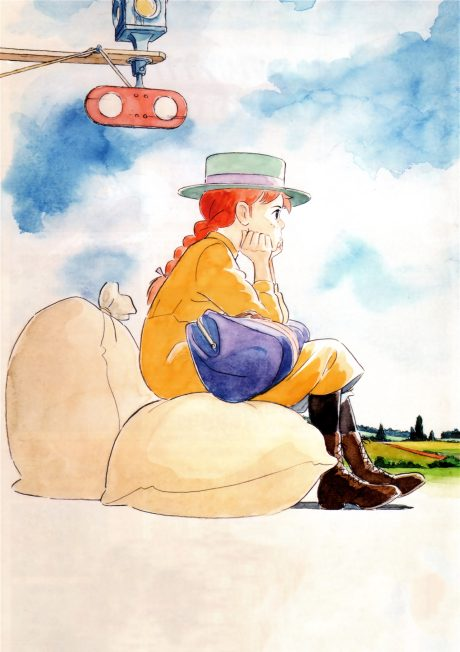

Journal with Witch
違国日記
Makio, a reclusive novelist, takes in her 15-year-old niece Asa after her parents die, and the two slowly learn to live together.
We haven't found where the anime ends in the manga yet.
8.7AniList score
—Animeter, no votes yet
13episodes
Rate it or report where you stopped
Anime finished. Where does the manga pick up?
StatusNo source yet
We looked for where the anime ends in the manga but found no source we trust yet. The manga is 59 chapters, finished.
More like Journal with Witch
 Film8.2
Film8.2
 Manga Ch. 548.0
Manga Ch. 548.0
 Original7.7
Original7.7

Original8.0 Film8.3
Film8.3
 Done8.5
Done8.5
 Film7.3
Film7.3
Manga Ch. 777.3
Smile Down the Runway Film8.4
Film8.4
 Manga Ch. 258.1
Manga Ch. 258.1
 Film8.6
Film8.6
 Film7.7
Film7.7